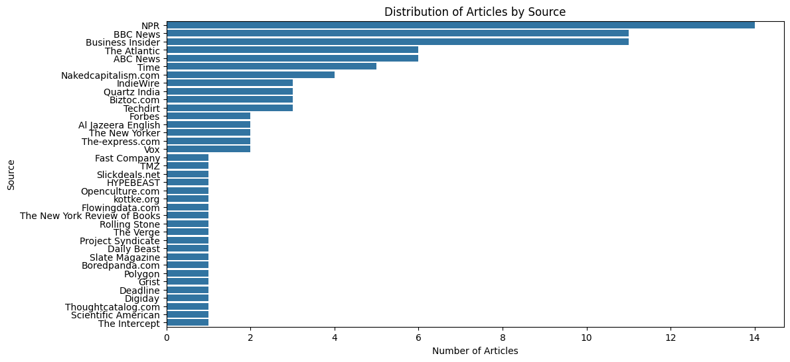
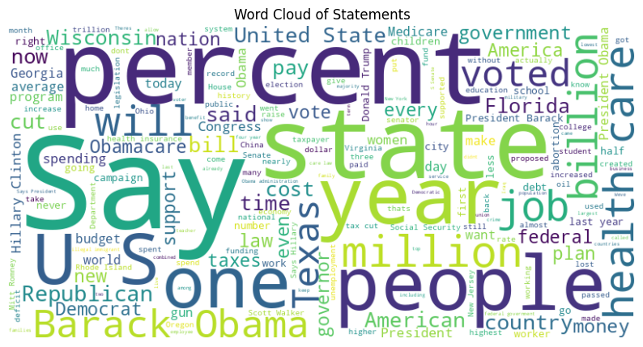
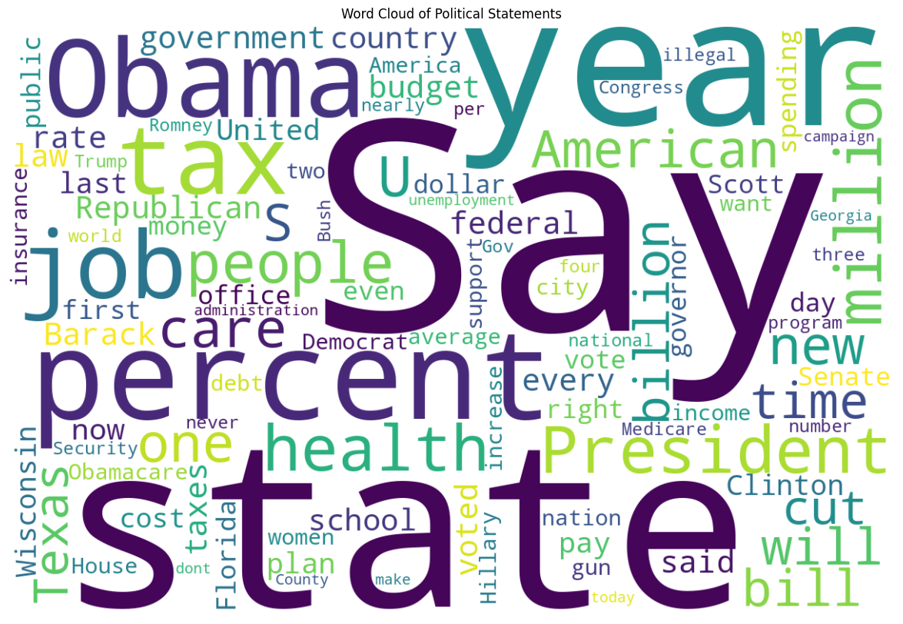
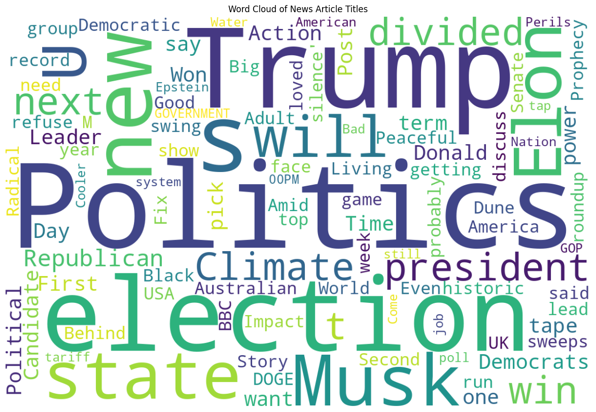
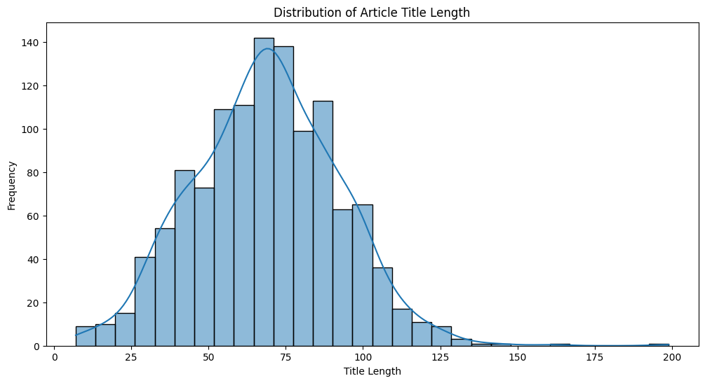
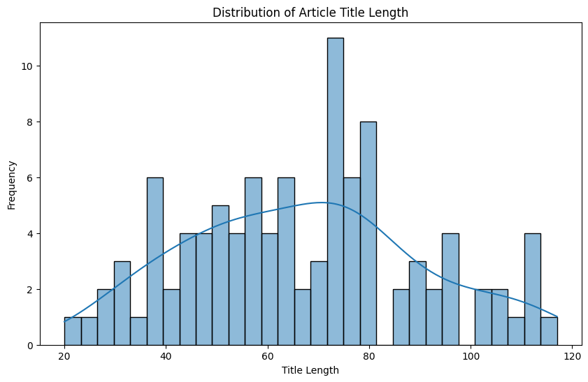
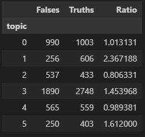
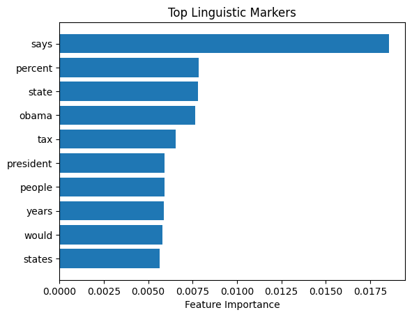
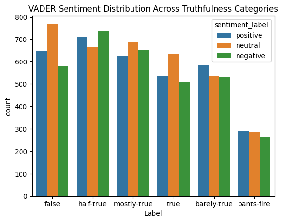
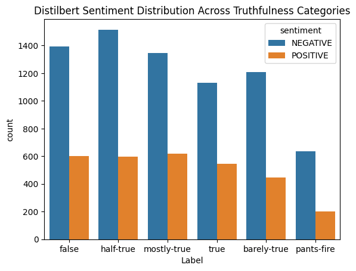

Identify Linguistic Markers of Misinformation in Political News Articles
DSAN5000 Final Project Report, 2024 Fall
Keywords: Machine Learning, Fake News, Misinformation Detection, Sentiment Analysis, Topic modeling, LIAR, POS Tagging
Introduction
In the digital age, the prevalence of misinformation, particularly in political news, has emerged as a critical challenge, undermining public trust and the credibility of information sources. The term "fake news" has evolved into a widespread descriptor of this phenomenon, capturing attention across media platforms and influencing societal discourse. Addressing this issue is essential to fostering informed decision-making and ensuring democratic integrity.
This report explores the linguistic markers of misinformation in political news articles, focusing on their evolution over time and their correlation with perceived credibility. By leveraging advanced machine learning techniques, we aim to identify and analyze the textual patterns that distinguish misinformation from reliable reporting. Our research seeks to provide actionable insights into how misinformation is constructed and disseminated, contributing to the development of robust detection methods.
In this paper, we will conduct a comprehensive overview of fake news in an attempt to explain this phenomenon. Through this analysis, we hope to gain a deeper understanding of the rising concern revolving around fake news and contribute to the ongoing conversation about ensuring our news is reliably fact-checked.
First, however, in order to fully understand our topic, we have come up with 5 research questions that we will also address throughout this paper:
How do linguistic patterns of misinformation differ across political ideologies?
How do linguistic markers of misinformation evolve over time in response to political events (like 2024 US Election)?
Can multimodal features (text + metadata) improve the detection of linguistic markers in misinformation?
What role does sentiment polarity play in distinguishing misinformation from credible political articles?
How does the use of rhetorical devices correlate with the perceived credibility of misinformation articles?
Through this comprehensive analysis, we aim to deepen our understanding of the mechanisms underlying fake news and offer a foundation for future advancements in automated misinformation detection.
The rest of our paper will adhere to the following format:
Literature Review: In order to get a better the current state in the field of fake news detection we will be going through a comprehensive overview of previous work done on the topic. The extent of our literature review contains some of the most cited papers in the space as well as the paper that introduces the benchmarking dataset we will use in our paper.
Data Preprocessing: In this section, data will be prepared for processing in machine learning. This includes data collection, data cleaning, and exploratory data analysis (EDA).
Starting with data collection, we will discuss each dataset we obtained that is related to our topic. Although not all of these sources may be used in our analysis, we include them as a valuable resource for others who may wish to utilize them in their own work.
Moving on to cleaning our data, we will discuss the methods necessary to transform the raw data into something we can use later for more complex analyses.
Finally, we move on to our EDA. In this section, we will use the art of EDA as a tool to help us better understand our data. Specifically, these tools will help identify correlations within the dataset and uncover any meaningful patterns present. These correlations and patterns can then be used later as a tool to create more robust and accurate models.
Exploratory and Predictive Modeling:
This is the technical section of our report where we will talk about the supervised and unsupervised machine learning techniques we used. We will talk through each of the models we used with visualizations of results scattered through to enhance understandability.
For unsupervised we start by bucketing our data into 6 topics using NMF topic modeling. From here we used a dimensionality reduction technique known as t-SNE to visualize each of these buckets created by the NMF model in a low dimensional space and analyze for clustering. Finally we will see if each topic has differing amounts of truthfulness to make a prediction on how well we will be able to create a model that can differential truthful statements from misleading ones.
For supervised learning we analyze linguistic patterns and sentiment in misinformation.
Conclusion:
In this section we will state our non-technical conclusions. Using the results we obtained we will comment on how these results are significant and add to the ongoing conversation about the recent emergence of fake news.
Literature Review
Fake News Detection on Social Media: A Data Mining Perspective1
Description: This is one of the most cited articles on Google Scholar about fake news detection, likely due to its extensive scope. It provides a comprehensive overview, including an exploration of what constitutes fake news, common challenges, and a detailed outline of various detection approaches. These include linguistic approaches (analyzing how the post is worded), visual approaches (detecting fake images), user-based approaches (evaluating the credibility of the poster), post-based approaches (examining how the post was received), and network-based approaches (analyzing where the post was shared).
A Survey on Natural Language Processing for Fake News Detection2
Description: This is one of the most comprehensive surveys on fake news detection using Natural Language Processing. It begins by defining fake news and related tasks such as fact-checking, rumor detection, stance detection, and sentiment analysis. The paper provides an extensive review of datasets and methods, covering classification and regression tasks for fake news detection. The approaches include SVMs, Naive Bayes, LSTMs, CNNs, and attention mechanisms. The paper also discusses dataset limitations and recommendations for future work.
Automatic Detection of Fake News3
Description: This is an innovative study on fake news detection, this article stands out for introducing datasets designed for detecting fake news across multiple domains. The paper provides a comprehensive exploration of linguistic differences between fake and legitimate news, examining features such as syntax, readability, and psycholinguistics. The paper builds models using SVMs that achieve up to 78% accuracy.
Towards News Verification: Deception Detection Methods for News Discourse4
Description: This article investigated whether rhetorical structures and discourse features in news text could reliably predict its veracity. Using data from NPR’s “Bluff the Listener” segment, they employed Rhetorical Structure Theory (RST) and Vector Space Modelling (VSM) to analyse the discourse
Do You Speak Disinformation? Computational Detection of Deceptive News-Like Content Using Linguistic and Stylistic Features5
Description: This article leverage explainable machine learning, specifically tree-based models, to analyze linguistic and stylistic features distinguishing genuine from deceptive articles. A substantial, diverse dataset of manually annotated articles is used to train and test the models, addressing limitations of previous studies which often relied on smaller or biased datasets. The results reveal specific linguistic patterns—such as headline length, use of exclamation marks, and presence of past tense verbs—that significantly contribute to accurate disinformation detection, providing valuable insights for journalists, fact-checkers, and algorithm developers. The study ultimately aims to improve automated disinformation detection methods and enhance public understanding of the “language of fake news”.
"Liar, Liar Pants on Fire": A New Benchmark Dataset for Fake News Detection6
Description:
This paper introduces LIAR, a new, significantly larger dataset (12,836 manually labelled statements) for fake news detection, addressing the previous lack of sufficient labelled data for robust machine learning models. The dataset, sourced from PolitiFact.com, includes rich metadata such as speaker affiliation and context, enabling more sophisticated analysis than previous, smaller datasets. The authors evaluate various machine learning models on LIAR, including a novel hybrid convolutional neural network that integrates textual and metadata features, demonstrating that incorporating metadata improves fake news detection accuracy. The paper’s purpose is to provide a valuable resource for the research community and showcase the benefits of using this enhanced dataset for improving fake news detection algorithms
Data Preprocessing
In this section, we will discuss the collection and cleaning of data sources relevant to our topic. Although not all of these sources may be used in our analysis, we include them as a valuable resource for others who may wish to utilize them in their own work. We then will explore our datasets in an attempt to better visualize and understand potential trends within the data.
Data Collection/Data Cleaning
LIAR dataset 7
The main dataset we will use to train and test our model is the LIAR dataset. This dataset is a benchmark dataset for fake news detection, containing 12.8K human-labeled short statements from various contexts, including news articles, TV or radio interviews, campaign speeches, social media posts, and fact-checking websites. Contained within the dataset are the statements made, meta information about the statements (who said it, where it was posted), and a truth value which measures the validity of the statement. The following is a table where I list each of these truth statements ranking them from 1 (least truthful) to 6 (most truthful):
| 1 | Pants on Fire |
| 2 | False |
| 3 | Barely-True |
| 4 | Half-True |
| 5 | Mostly-True |
| 6 | True |
This is an already cleaned dataset so there was not much data cleaning required. The only change we made was converting the TSV files to CSV files as these are often easier since they can be examined in excel and are just generally a more common format for datasets.
Media Cloud API Data 8
This data comes from a comprehensive platform offering access to a vast collection of news articles and media content. The API enables programmatic access to analyze news coverage, track topics across different media sources, and study media ecosystems over time.
News API Data 9
This data comes from a simple HTTP REST API for searching and retrieving live articles from all over the web. It provides access to headlines and articles from over 80,000 news sources worldwide, supporting features like keyword search, source filtering, and date range queries.
This data was the most complicated to extract into a useful format due the the data originally formatted as a JSON file. Reading in the JSON file and looking through the different keys avaialable we were able to extract the data needed ending up with a csv dataframe containing 10 attributes which include data such as article content, article dates/times, article source, article author, and article title.
In this section we also attempted to label each of the articles using a Open AI’s API so we could test our model on a second dataset of raw data. Unfortunately, what we found is that none of the OpenAI API models have access to real-time data in order to validate the claims. We did some research into other LLM APIs and found that none of the large LLM APIs have access to real-time or constantly updated information.
Exploratory Data Analysis (EDA)
Google Trends Analysis
To start out our EDA process we return to our introduction to visualize what the trend of fake news may look like. The graph from google trends:

As can be seen the the term "fake news" was not really used before 2016. Interestingly this is when the extremely controversial candidate of Donald Trump emerged onto the scene. Trump’s often criticism of news sources likely impacted the public’s view on these sources. While this large uptick in 2016 could be seen as the term becoming popular, we also see a large increase in usage in 2020 suggesting election cycles may be having an effect on people’s opinions of the news.
News Source Analysis
In this section we will explore the sources of our data in order to have a more concrete understanding of where are data is from. This analysis will contain the following:
Distribution of truth labels in fact-checked statements
Temporal patterns in news coverage
Source analysis of news articles
The following is a barchart containing the most popular sources in our dataset along with the number of times that source appeared.

From the distribution of News API Data by source, we can see the sources are highly unbalanced. The amount of news gathered from NPR, BBC News and Business Insider is far greater than the other sources.
Text Analysis
In this section we will explore our textual data in order to have a more concrete understanding of what this data looks like. This analysis will contain the following:
Word count distributions
Word clouds to visualize common themes
Statement length analysis
For a dataset on news articles, the non-numerical data contains more value than the numerical data. Especially given our task of evaluating the truthfulness of a statement, the textual data is very important. Identifying which words occur most frequently offers valuable insights that help refine and improve our approach to identify misinformation.
To visualize this concept, three wordclouds have been created. These wordclouds show the most common words in each of our datasets. Common words that likely have give no information into whether a word is part of a question or an answer have been removed from the visualizations. These words commonly called stopwords such as "the", "a", and "to" were removed.



These wordclouds are generated from the article titles to visualize the most common words. We can obviously observe that the names of presidents, president candidates and some socioeconomic celebrities appear frequently in all the wordclouds.
More specifically, from these three wordclouds we can see a lot of similarities and also some differences. Certain broad words are common in all three datasets such as "state", "say", and "america". Looking closely into the differences we see that these three datasets are likely from different time periods. This is because the News API dataset has more recent names such as Elon Musk and Donald Trump where the other two datasets focus more on Obama and his policies. Looking closer at the data sources we can see this does seem to be the case.
In the next two bar charts we are plotting the lengths of the titles of articles from both the MediaCloud and NewsAPI data.


We can see from these barcharts that the typical title length is around 75 characters both from MediaCloud API data and News API data, which may imply some inherent characteristics of political news titles.
Visualization
Distribution plots of key variables
Time series analysis of publication patterns
Categorical data visualization
Methodology
Unsupervised Machine Learning
The first unsupervised technique we used in a dimensionality reduction technique. The goal of such techniques is to compress the data down from a large number of attributes to 2-3 attributes so that we can visualize these attributes. There’s different options on how to do this with the main two being t-SNE and PCA. For our analysis we chose to use t-SNE due to the non-linear transformations the technique brings which can help show complex non-linear clusters that PCA would not be able to visualize in the same way.
Given the most important factors in our data are textual we will be working with this type of data throughout this analysis which does add some complexities. Our workflow is as follows:
Clean Text: We start by removing punctuation marks, numbers, and replacing all uppercase letters with lowercase ones. We will then remove common words that likely have give no information into the legitimacy of a news source. These words commonly called stop words such as “the”, “a”, and “to” were removed using nltk.corpus’s stop words list.
Text Vectorization: Next we will vectorize our data using the TfidfVectorizer. The point of this is to covert our textual data into a numerical format that can be processed by and learned from by a computer.
NMF Model: The next step is to use NMF topic modeling to bin the different words in our model into 6 different topics. These topics are assigned by the model with the only hyperparaemter we chose being the number of topics as 6. We chose this to explore how closely these 6 randomly generated clusters would align with the 6 truth categories. If we see that these topics assigned by the model have well defined clusters and contain largely one of the truth categories this would be a very good sign that we could use supervised learning techniques to predict the truthfulness of a statement. However, NMF doesn’t inherently align its clusters with external categories, so the clusters might not align perfectly.
Plot Topics: Here we simply take the results from the previous NMF model to create a graphic that shows the most common words in each topic.
Most common words in each NMFtopic 
While we do see certain words such as "texas" appear in multiple topics these topics seem to be well seperated.
t-SNE: Finally we get to t-SNE our dimensionality reduction technique that we will use the lower the number of dimensions in our text dataset in order to plot it in a 2 dimensional plane.
Plot t-SNE: Again, here we simply take the results from the previous model and plot them to create a 2 dimensional graph of our textual data color coded by the topics created by the NMF model in step 3.
t-SNE Visualization 
From this result we can see there seems to be decently well defined clusters which suggests there is an accurate way to segment the data.
Examine results: Our final step is to compare these results to our actual truth values to see if there’s any correlation between truth values and our model made topic modeling. If the truth values of these different clusters differ, this would suggest we could nicely separate our data by truth values as is our goal.
We will start by using a crosstab to visualize the amount of each truth type in each group
Crosstable of truth values vs NMF topics 
We won’t spend too much time on this graphic as it’s a bit much. Instead we have included it for reference and will create a binned the truth types into two categories. The table that follows will contain the following columns for each of the NMF topics created earlier:
Falses: Number of pants-on-fire statements + number of false statements + number of barely-true statements
Truths: Number of half-true statements + number of mostly-true statements + number of true statements
Ratio: This contains the ratio of how many more true statements there are then false statements as defined above \(\frac{Truths}{Falses}\)
Binned crosstable of truth values vs NMF topics 
From here we can see that the different topics do have significantly different truth ratios with topic 1 having 2.37 times more truths than falses and topic 2 having almost 20% less truths than falses. It is important to reference above what we have defined as truths and falses to understand the full context of this result.
Combining all of our findings from this section we were able to visualize well separated clusters and that these clusters have a pretty significantly different amount of truthful statements in each topics. This suggests we will be able to create a model in the supervised learning section that is able to differentiate true and false statements.
Supervised Machine Learning
In this part we mainly implement supervised learning on LIAR dataset to identify linguistic markers.
Load and Explore the Dataset
The dataset is loaded and explored to understand its structure and contents. The LIAR dataset consists of 10,240 entries with 14 columns, including ID, Label, Statement, Subjects, Speaker, Job_Title, State_Info, Party, Barely_True_Count, False_Count, Half_True_Count, Mostly_True_Count, Pants_On_Fire_Count, and Context.
Preprocess Text Data
Text data is preprocessed to remove stopwords, punctuation, and to tokenize the text. This step is crucial for extracting meaningful features from the text. The preprocessing function tokenizes the text, removes non-alphanumeric tokens, and filters out stopwords and punctuation.
Extract Linguistic Features
Part-of-Speech (POS) tagging is a process of marking up a word in a text (corpus) as corresponding to a particular part of speech, based on both its definition and its context. Here are some common POS tags and their meanings:
| POS Tag | Description |
|---|---|
| NN | Noun, singular or mass |
| NNS | Noun, plural |
| VB | Verb, base form |
| VBD | Verb, past tense |
| VBG | Verb, gerund or present participle |
| VBZ | Verb, 3rd person singular present |
| JJ | Adjective |
| RB | Adverb |
| IN | Preposition or subordinating conjunction |
| CD | Cardinal number |
Linguistic features are extracted using TF-IDF for lexical features and POS tagging for syntactic features. The TF-IDF vectorizer is used to transform the cleaned text into a matrix of TF-IDF features. Additionally, POS tagging is performed to extract syntactic features, which are then counted and stored. However, in our research we don’t find a significant correlation between POS tagging and truthfulness categories.

Correlate Features with Misinformation
The data is split into training and testing sets, and a RandomForestClassifier is trained to predict the labels. The classifier’s performance is evaluated using precision, recall, and F1-score metrics. The results indicate varying levels of accuracy across different truthfulness categories.
| precision | recall | f1-score | support | |
|---|---|---|---|---|
| barely-true | 0.19 | 0.15 | 0.17 | 482 |
| false | 0.24 | 0.33 | 0.28 | 603 |
| half-true | 0.26 | 0.27 | 0.26 | 675 |
| mostly-true | 0.24 | 0.28 | 0.26 | 582 |
| pants-fire | 0.23 | 0.11 | 0.15 | 236 |
| true | 0.22 | 0.17 | 0.19 | 494 |
| accuracy | 0.23 | 3072 | ||
| macro avg | 0.23 | 0.22 | 0.22 | 3072 |
| weighted avg | 0.23 | 0.23 | 0.23 | 3072 |
Feature importance is analyzed to understand which linguistic markers are most indicative of misinformation. The top 10 features are visualized using a bar plot, highlighting the most important lexical features identified by the TF-IDF vectorizer.

Sentiment Analysis
Sentiment analysis is performed using two methods:
VADER Sentiment Analysis: The VADER sentiment analyzer is used to calculate sentiment scores for the cleaned text. The sentiment scores are categorized into positive, negative, and neutral labels. The distribution of sentiment across different truthfulness categories is visualized using a count plot.
VADER Sentiment Distribution Across Truthfulness Categories 
Hugging Face Transformers: The Hugging Face pipeline for sentiment analysis is used to classify the sentiment of the cleaned text. The sentiment labels are then grouped by truthfulness categories and visualized using a count plot.
Distilbert Sentiment Distribution Across Truthfulness Categories 
Results and Analysis
Unsupervised Machine Learning Results
Dimensionality Reduction
Using t-SNE for dimensionality reduction, we visualized clusters derived from the textual features of news statements. The resulting plot revealed well-defined clusters, suggesting distinct patterns in the data. The separation between clusters indicates that linguistic markers can differentiate categories of misinformation effectively.
Topic Modeling
Applying NMF for topic modeling, six topics were identified, with each characterized by distinct linguistic features. While some overlap in keywords (e.g., Texas) was observed, most topics demonstrated meaningful separations. A key observation was that certain topics correlated strongly with the “truth values” in the LIAR dataset. For example:
Topic 1: Had a truth-to-false ratio of 2.37, suggesting a higher association with truthful statements.
Topic 2: Exhibited a 20% higher concentration of false statements, reinforcing its alignment with misinformation patterns.
Cross-Tabulation and Truthfulness Analysis
By binning truth values into “True” and “False” categories, we observed significant variability in the distribution across topics. This highlights that the NMF-generated topics capture meaningful linguistic markers that correlate with the veracity of statements. These insights lay a strong foundation for supervised learning.
Supervised Machine Learning Results
Model Performance
We implemented a Random Forest Classifier on the LIAR dataset, achieving the following performance metrics across six truth categories:
| Category | Precision | Recall | F1-Score |
|---|---|---|---|
| Barely-True | 0.19 | 0.15 | 0.17 |
| False | 0.24 | 0.33 | 0.28 |
| Half-True | 0.26 | 0.27 | 0.26 |
| Mostly-True | 0.24 | 0.28 | 0.26 |
| Pants-on-Fire | 0.23 | 0.11 | 0.15 |
| True | 0.22 | 0.17 | 0.19 |
| Overall | 0.23 | 0.23 | 0.23 |
While the model’s overall accuracy remains modest, its ability to differentiate between truthfulness categories provides valuable insights into linguistic markers of misinformation.
Sentiment Analysis
VADER Sentiment Analysis: The analysis revealed distinct sentiment distributions across truthfulness categories, with highly polarized sentiments more common in false or misleading statements.
Hugging Face Transformers: Similar patterns emerged, with more neutral tones linked to truthful statements and exaggerated tones correlated with misinformation.
Limitations
POS tagging analysis did not yield strong correlations with truthfulness categories, suggesting that syntactic features alone may not be reliable indicators of misinformation.
Conclusion
The identification of linguistic markers of misinformation in political news articles is a critical endeavor in an era where fake news significantly influences public discourse and opinion. This study has aimed to explore the unique characteristics of misinformation, develop methodologies to detect it, and provide insights that can inform future research and practical interventions.
Key Findings
Linguistic Patterns of Misinformation: Our analysis revealed that linguistic markers such as excessive subjectivity and emotional tone are significantly correlated with misinformation. Features like exaggerated sentiment, frequent use of hyperbolic language, and reliance on emotionally charged words were prominent in misleading content.
The Role of Sentiment and Style: Sentiment analysis demonstrated that false or misleading statements often exhibit higher sentiment polarity compared to truthful articles. Misleading content tends to have more extreme positive or negative sentiments, while credible news is characterized by more neutral language. This finding aligns with previous studies suggesting that emotional manipulation is a hallmark of misinformation.
Topic Clustering and Dimensionality Reduction: Unsupervised learning approaches, such as t-SNE and NMF, were effective in revealing distinct clusters within the dataset. These clusters highlighted clear distinctions in the types of statements categorized as true or false. Notably, certain clusters exhibited a higher proportion of false statements, indicating that clustering techniques could be a valuable tool for misinformation detection.
Challenges and Limitations: Several limitations emerged from this study. First, the performance of the supervised models was hindered by the complexity and subtlety of linguistic cues associated with misinformation. The overlap of linguistic features between credible and misleading articles posed a significant challenge. Furthermore, part-of-speech tagging did not yield strong correlations with misinformation, indicating that syntactic features alone are insufficient for accurate classification. The reliance on pre-existing datasets like the LIAR dataset also constrained the generalizability of the findings.
Implications
The results of this study have several important implications for researchers, fact-checkers, and media platforms:
For Researchers: This study highlights the value of combining sentiment analysis and clustering techniques to identify misinformation. Future research could further refine these models and explore deeper semantic features, like rhetorical device analysis.
For Fact-Checkers: The identification of specific linguistic markers can help fact-checking organizations develop tools to flag potentially misleading articles for review. This approach could be integrated into existing verification workflows to prioritize high-risk content.
For Media Platforms: Social media and news platforms could incorporate machine learning models trained on linguistic markers to detect and flag content that shows signs of misinformation. While human oversight would remain essential, these models could serve as an early warning system for potentially harmful content.
Future Work
This project could be the groundwork for future exploration of linguistic markers of misinformation. Several avenues for future research are recommended:
Enhanced Feature Engineering: Future studies could focus on developing new features, such as semantic embeddings and context-aware representations, to better capture the nuanced nature of misinformation.
Improved Model Accuracy: Exploring advanced machine learning models, such as deep learning approaches (e.g., BERT or GPT-based classifiers), could significantly enhance classification accuracy.
Broader Dataset Utilization: Incorporating diverse datasets beyond the LIAR dataset could increase generalizability and improve model robustness.
Multi-Modal Analysis: Future research could analyze non-textual features, such as metadata, images, and social sharing patterns, to provide a holistic approach to misinformation detection.
Final Thoughts
This study underscores the power and promise of machine learning in addressing the ongoing challenge of misinformation. By identifying and understanding the linguistic markers that differentiate misinformation from credible news, researchers and practitioners can contribute to a more informed and resilient society. While there is no “silver bullet” solution, the insights derived from this study provide a strong foundation for future innovations in automated misinformation detection. As the landscape of political communication continues to evolve, so too must our methods for safeguarding the integrity of information in public discourse.